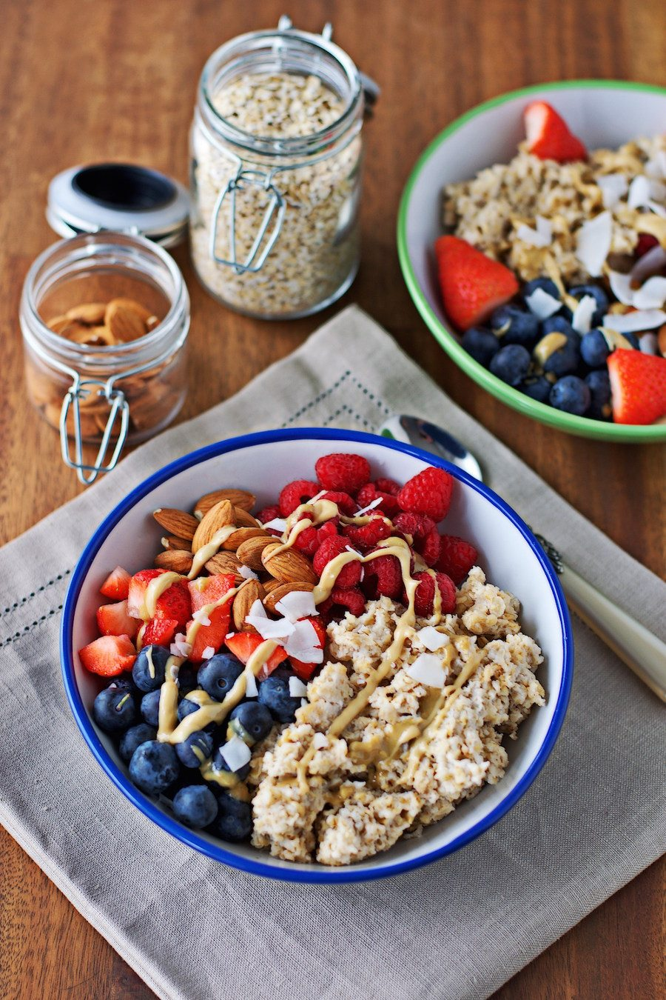

Simple,easy, and quick breakfast that can be made in 10 minutes or so. It's also very versatile. 
Another quick and easy recipe to make when you have a bit of time. It takes about 7 minutes.

click to watch a video on how to make chocolate chip panacakes

click on watch how to make sweet potato and black bean burritos